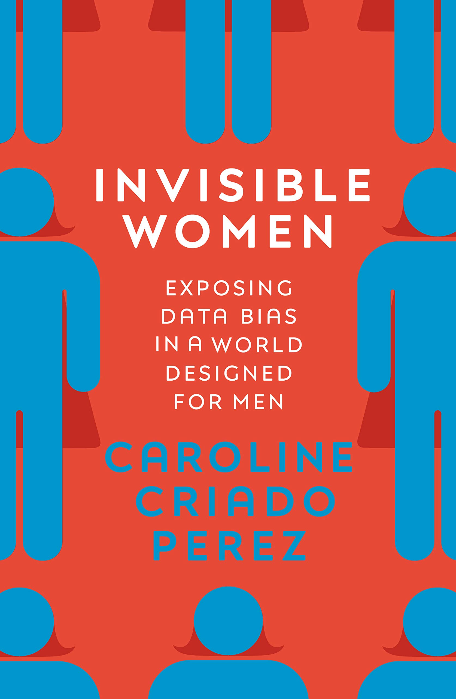

This is how invisible women supports my argument
Through encoded bias and data gaps we for the first time can see in large numbers how our society is unequal
This is how invisible women supports my argument
This is how the work of Joy supports my argument